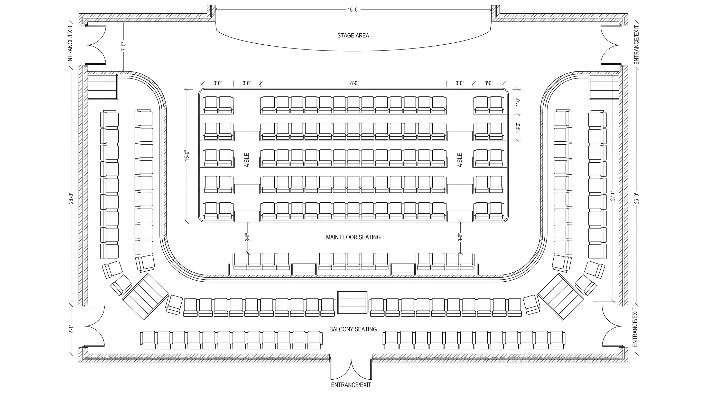
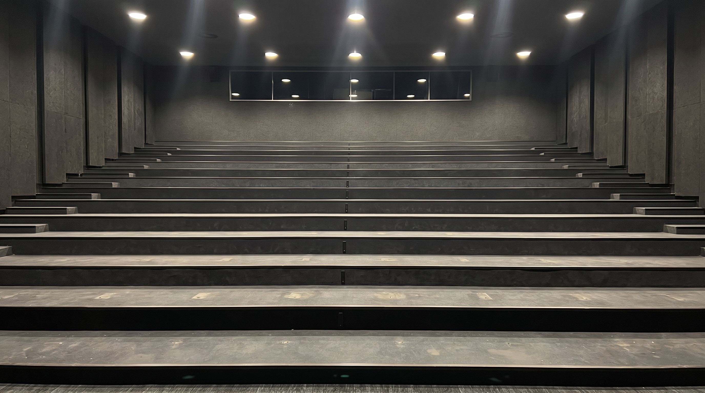
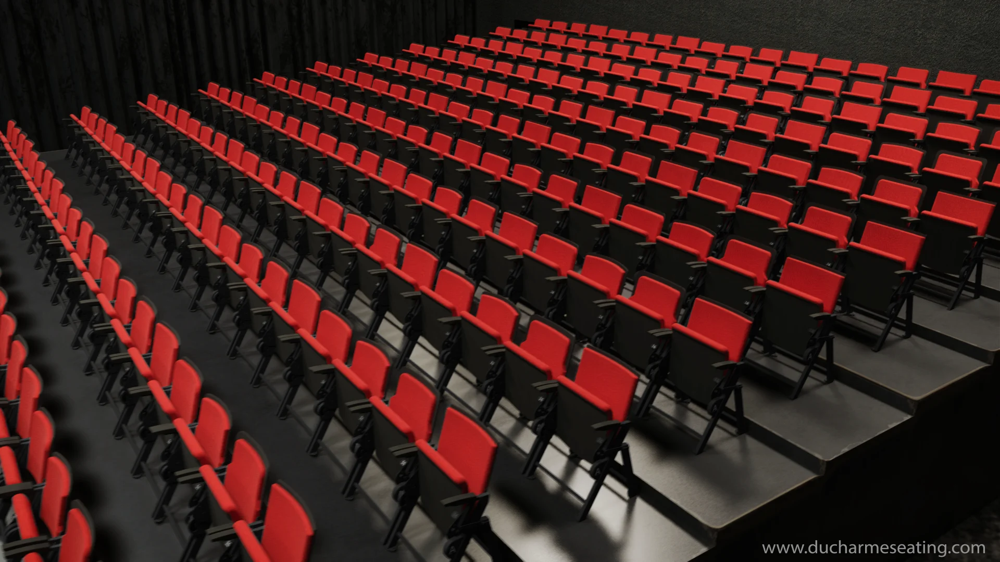
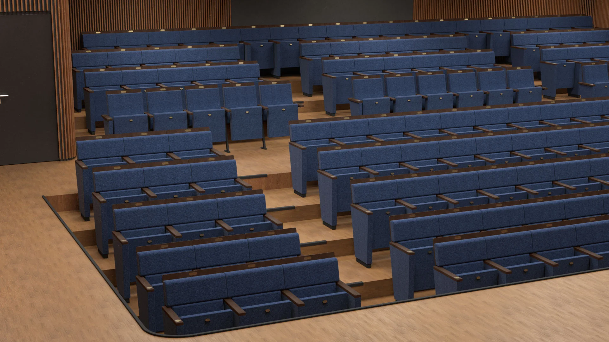
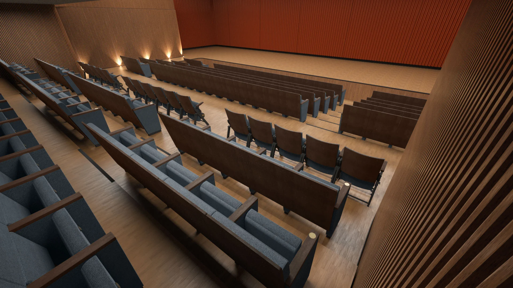
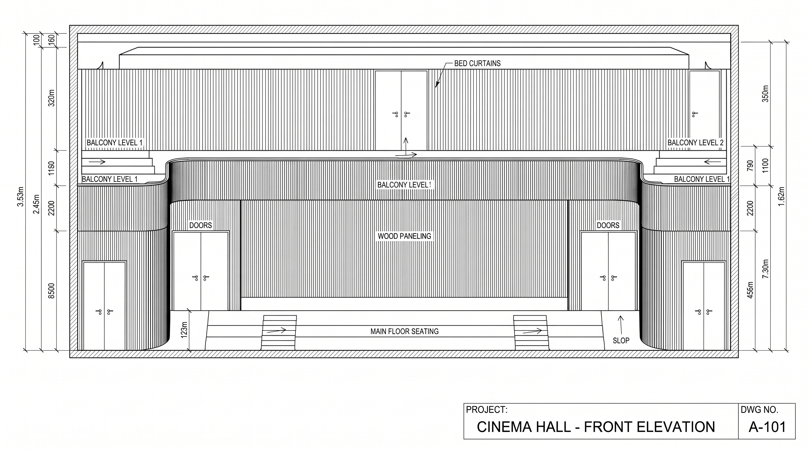
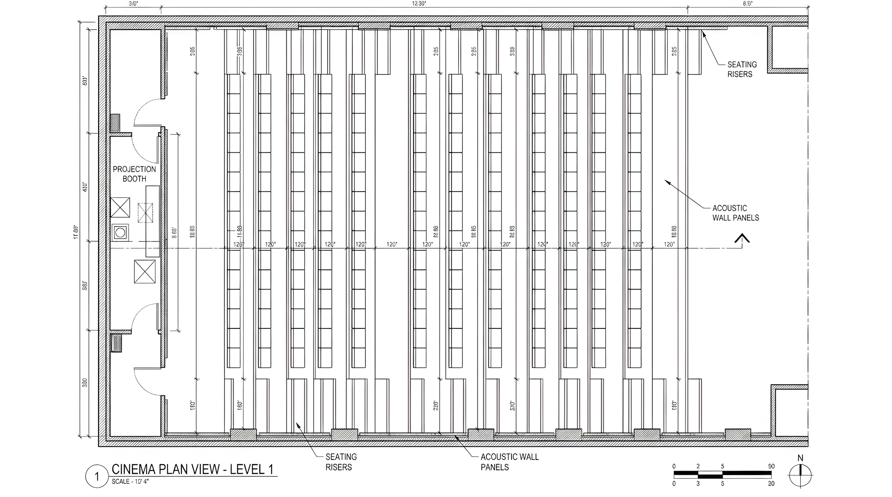
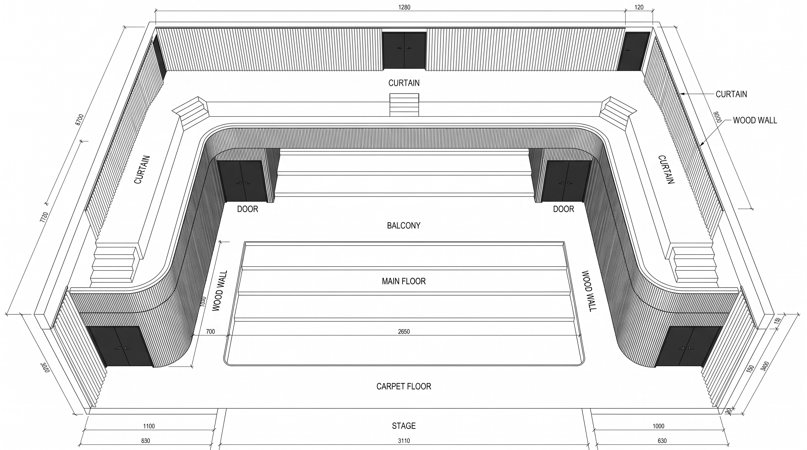
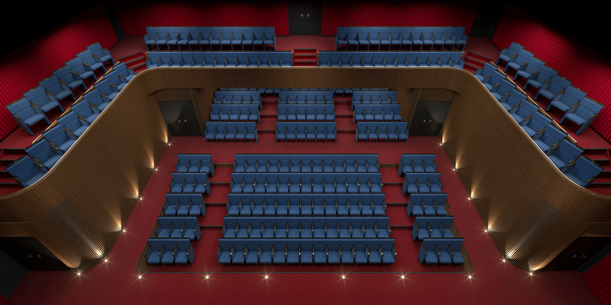
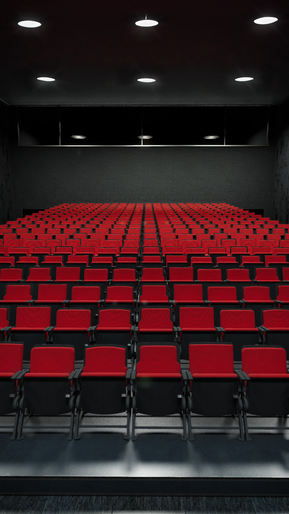

CONTEXT
Ducharme Seating has been engineering spectator and institutional seating since 1959 — outfitting world-renowned auditoriums, concert halls, arena luxury suites, and university lecture theaters across North America. Their commercial pipeline relies on architects, general contractors, and venue operators who review technical spec sheets, architectural bids, and catalog presentations before awarding multi-million-dollar tenders.
This commission required delivering high-impact architectural CGI for two completely separate venue projects with totally different spatial programs, lighting conditions, and architectural typologies:
- Venue 01 — The Grand Performance Theater: A prestigious, multi-tiered auditorium designed from architectural DWG plans — featuring an orchestra floor, a sweeping curved wood-slat mezzanine balcony, acoustic perimeter curtains, and luxury upholstered seating for wide catalog and procurement presentations.
- Venue 02 — The Cinema Screening Room: A specialized projection screening room with steep concrete risers, dark acoustic wall baffles, and high-density red folding cinema chairs requiring pre-installation verification and kinematic motion validation.

THE PROBLEM
You cannot photograph chairs inside spaces that exist only as CAD line drawings or raw concrete construction sites.
When bidding for major architectural tenders, commercial seating manufacturers face two fundamentally different visualization challenges depending on the venue's stage of development:
In Venue 01 (The Grand Theater), the building was purely in schematic planning. There were no physical rooms to photograph — only 2D flat plans and finish swatches. Ducharme needed to prove how their luxury seating models would define the vast architectural volume under different wood stains and fabric colors.
In Venue 02 (The Cinema Screening Room), the venue was an active, bare-bones construction site: raw concrete stepped risers, unpainted acoustic surfaces, and temporary overhead downlights. The client needed absolute spatial proof of row spacing, folding clearances, and sightlines to the screen before signing off on chair manufacturing and delivery.


OBJECTIVES
Three hard commercial and architectural targets framed the project across both commissions:
CONSTRAINTS
Divergent Input Data
Reconstructing Venue 01 purely from flat 2D DWG vector plans, while reverse-engineering Venue 02 from uncalibrated construction site photos and structural riser sections.
High-Density Instanced Geometry
Populating thousands of complex mechanical chairs across both venues without exceeding GPU VRAM limits during Redshift raytracing passes.
Acoustic Material Realism
Specifying realistic light-bounce and anisotropic micro-sheen on theatre velours, acoustic cinema wall felt, and clearcoat varnished wood slat surfaces.
Kinematics & Code Compliance
Accurately animating the mechanical pivot and gravity-tilt fold of cinema seats to demonstrate clear egress aisle widths and unobstructed screen sightlines.


PROCESS
Theater Shell Construction (Venue 01)
Extruded the curved balcony mezzanine, proscenium stage boundary, and acoustic vertical wood slat walls directly from DWG elevation prints (A-101).
Camera Match to Site Photos (Venue 02)
Calibrated 3D virtual camera focal lengths and sensor pitch in Redshift to match real-world construction site photos of the cinema's concrete stepped risers.
Procedural Shader Networks
Built modular PBR shader trees with swappable diffuse maps and roughness values to audition multiple fabric and wood species within minutes.
Instanced Raytracing & Kinematics
Deployed Redshift proxy instancing along curved seating splines, rigging pivot axes to animate seat-fold motion in the cinema walkthrough.


KEY DECISIONS
Two Dedicated Lighting Environments
Rather than a one-size-fits-all lighting rig, Venue 01 was lit with theatrical warm spotlights and cove lights, while Venue 02 utilized direct downlights and aisle illuminance.
Proxy Instancing over Raw Geometry
Populated over 2,500 individual chairs via lightweight GPU proxies, keeping master project files under 350 MB and enabling real-time navigation.
Finish Variant Matrix for the Theater
Separated chair geometry from material definitions, allowing Ducharme to generate complete auditorium colorway options (walnut, crimson, navy) without re-rendering geometry.
Cinema Walkthrough & Kinematics Rig
Engineered an animated camera flythrough to illustrate spectator eye levels and demonstrate automatic counterweight seat retraction under commercial codes.

RESULTS


LEARNINGS
“Commercial seating is never bought in a vacuum — it is bought for a specific architectural volume. Whether the starting point is an abstract 2D CAD blueprint (like the Grand Theater) or a raw, unfinished concrete construction site (like the Cinema Screening Room), the visualizer's job is to replace spatial doubt with undeniable photorealistic certainty. Showing the operator their exact finished venue before the first bolt is delivered is what closes multi-million-dollar architectural tenders.”